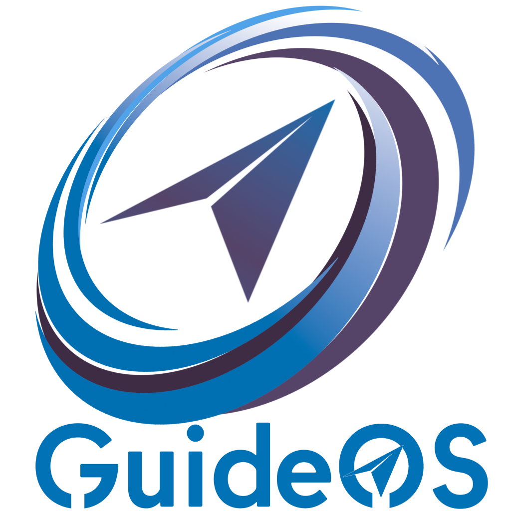
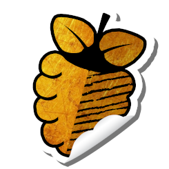

Ein paar Software-Projekte, an denen ich (mit-)arbeite oder gearbeitet habe.

GuideOS
Kein Versuch, die nächste "grosse" Distribution zu werden, sondern ein gemeinsames Community-Experiment: Bei GuideOS entscheidet die Community selbst mit, wie die Linux-Distribution aussehen und funktionieren soll.

PiGro - Just Click it!
Eine grafische Oberfläche, mit der sich fast alle Einstellungen eines Raspberry Pi an einem Ort verwalten lassen: System-Monitoring, Updates, Autostarts, Prozess-Killer, Übertakten, Desktop-Umgebung wechseln und mehr. Läuft auf Raspberry Pi OS, Ubuntu, MX Linux u.a.
NuDebi
Eine gDebi-artige GTK4-Anwendung zum Prüfen und Installieren lokaler .deb-Pakete — inklusive Paketinfos, Abhängigkeitsanzeige und Dateimanager-Integration.
Helfen
Auch wenn es ein bisschen abstrakt klingt, anderen Menschen bei IT-Problemen zu helfen ist mein grösstes und am längsten währendes Projekt. Ich weiss, dass Computer für viele ein Buch mit sieben Siegeln sind. Man kann nicht alles wissen, aber man kann um Hilfe bitten. Troubleshooting macht mir Spass, und je kniffliger die Sache, desto intensiver beschäftige ich mich mit der Thematik.